Pizza-Pizza CNC Machine¶
 Teddy Warner| Winter, 2022 | 38–48 minutes
Teddy Warner| Winter, 2022 | 38–48 minutes
A Pizza-Preparing, Tool-Changing, 3-Axis, 3D-printed CNC Machine!
The Pizza-Pizza CNC Machine is a Marlin-based, three-axis CNC Machine I developed alongside three of my friends. My contributions to the project include the machine’s gantry, electronic housing, and parts of the frame CAD, as well as the machine’s electronics system, firmware, and pizza-preparing gcode. This publication covers the fabrication of the CNC in-depth, with a focus on my project contributions, while also including final-result media.
The machine includes two tool ends, one for sauce distribution and another for cheese, with the potential for expandability to have toping tool ends in future iterations. The CNC is mostly 3D-printed, with the exception of its aluminum rails and laser-cut wooden baseplate, and operates with a mini RAMBo - or RepRap Arduino-Mega-compatible Mother Board.
The Pizza-Pizza CNC is a prototype. While all files are provided for your recreation, our initial build was in a time trial: the machine was designed, manufactured, and assembled in a little under 2 weeks. That being said, we’d love to see your recreations and refined iterations of the project!
Supplies¶
| Item | Quantity | Price |
|---|---|---|
| 1.75mm White PETG (1kg) | 1 | $23.99 |
| Mini RAMBO | 1 | $95.00 |
| Creality LCD | 1 | $22.79 |
| 12v DC Power Supply | 1 | $20.98 |
| AC Power Adapter | 1 | $8.99 |
| V-Rollers (Pack) | 1 | $9.99 |
| Linear Bearings (Pack) | 1 | $10.95 |
| NEMA 17 Stepper Motors | 4 | $12.99 |
| Servo Motors | 2 | $16.99 |
| 40mm x 10mm Fan | 1 | $13.95 |
| Steel Linear Motion Rods | 2 | $14.39 |
| 20x20 Aluminum Extrusion (Pack) | 2 | $50.99 |
| Stepper Belts (10 Meters) | 1 | $14.99 |
| M3 Hardware Assortment (Bolts, Nuts & Screws) | 1 | - |
— Total Cost: $316.99 —
Downloads¶
Click here to access and download all files, including CAD, Code, and Schematics, for this project. These files can be used and altered with attribution, as stated and enforced by my project license. In addition to the files included in this downloads folder, please note that Fusion 360 source files can be accessed with the Open in Fusion 360 button in the bottom right-hand corner of each of the embedded designs on this page.
Checkout the Pizza Pizza CNC on Instructables
The Pizza Pizza CNC Machine recieve the Judges Prize in Autodesk Instructable’s CNC and 3D Printing Contest! Check out the writeup here!
Gantry CAD¶
A big feature of the Pizza-Pizza CNC is its tool-changing functionality. The machine’s Z-carriage comes equipped with a claw-like end that can grab the machine’s two inverted-frustum-shaped tools: a cheese and a sauce hopper. These hoppers will hang from mounts on the machine’s frame from contact at their smaller diameters, and are picked up by moving the machine’s claw just above these mounts, and sliding up to mesh with the larger top diameter of the hoppers. Thus, our CNC needs a z-axis to move the machine’s claw up and down along the inverted-frustrum’s surface. With this in mind, I began work modeling our CNC’s Z-carriage in Fusion 360.
The carriage itself is a rather simple piece, using linear bearings to move along the y-axis rods, with two underside slots running parallel to each other to hold the bearings in place. Both of these slots run the length of the carriage, however towards the center of the slots, there is a small lip up, allowing the steel rods to still move while holding the linear bearings in the four corners, at the ends of each slot. The final bit to this design is a bolt-on endcap for two of the sides of the carriage, ensuring the bearings don’t leave the carriage’s slots.
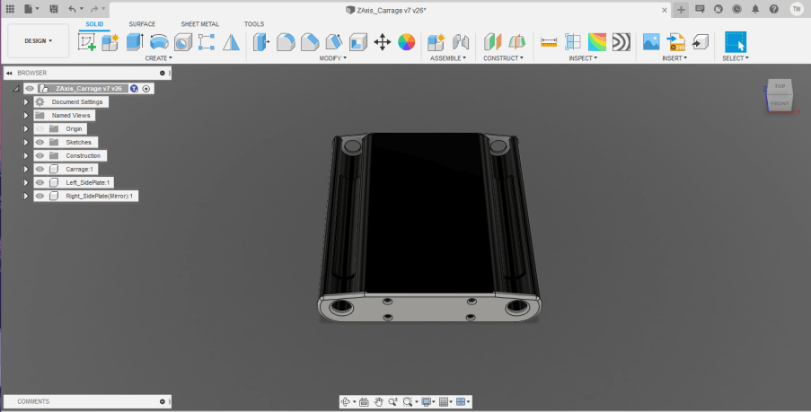
From here, I added two little features near the two endcaps, allowing for the Y-axis belt to be clamped to the carriage. The carriage will be pulled along the axis by this belt, attached to a stepper motor and idler on each end of the steel rods. These little features stray off the carriages centerline to the left, allowing for the belt running towards the right of the carriage to be unaltered. Each of the belt clips has a slot with matching teeth to mesh with the Y-axis belt, allowing for the feature to hold the belt without slipping.
With the Y-axis motion of the carriage flattened out, I began the Z-axis design. To keep as much carriage bulk towards it’s center, I began by positioning a stepper motor mount at the top middle of the carriage body. The machine will use this downwards-facing stepper, coupled to an 8mm threaded rod with a coupler and support bearing to drive the it’s claw end. Because this rod will be hanging down from the coupler, the carriage design fits a bearing below the stepper and coupler assembly, to support the coupler and allow for a smooth rotation. Along with this threaded rod, the Z-axis uses two linear steel rods, attached to the bottom of the carriage and to a small bottom bracket to create a track for the axis to move on. These rods are the same style as those used on the machine’s Y-axis. The final piece to this carriage involved endstop mounting. To home the Z-axis before machine use, I modeled an endstop switch mounting face, along with some mounting screw holes into the bottom connecting piece between the two steel rods.
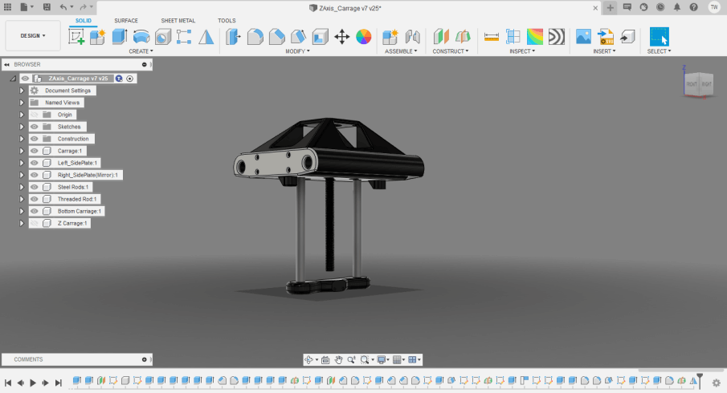
The final bit to this carriage puzzle was the Z-axis claw. Similar to the carriage itself, this claw utilizes linear bearings to roll vertically on the Z-axis’s two steel rods. The claw is driven up and down by the 8mm threaded rod attached to the Z-axis stepper motor, meshing with the rod’s corresponding threaded nut. The pass-through hole for this nut is designed to allow the nut to sit flush with the top surface of the claw and can be inserted into the claw as you would a brass insert, by heating the nut with a soldering iron, while applying pressure to guild the nut into the hole. Next to the claws’ nut is a small feature laying on the underside of the claw. This jut-out box ensures the Z-axis endstop hits the claw before the claw’s linear bearings hit the bottom of the axis. From this feature, the claw ramps up into the hopper-holding end. This end consists of a 240-degree semi-circle, allowing for the end to slide into the bottom end of the hopper, and the rais to lock the hopper in the semi-circle. This claw was finished up with a small chef hat icon, which I imported into Fusion as an SVG before extruding the outlines of the design into some of the claw’s space. Below is the finished Z-Axis Carriage model, including the Y-axis motion, Z-Axis, and the claw of the machines.
With the carriage flattened out, I derived this Z-Carriage model into a communal machine render my friends and I shared, moving the component to run along the two Y-axis steel rods.
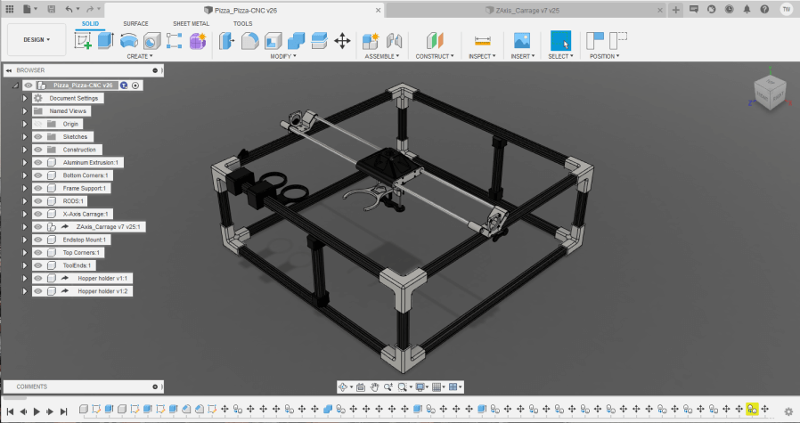
Endstops & Belt Tensions¶
I next began work on the Pizza-Pizza CNC Machine’s gantry alongside my friend, Graham Smith. I developed the X-Axis belts and endstop, while Graham dealt with the Y-axis. I began this work off of one of the corner brackets Graham had modeled in a shared Pizza-Pizza CNC Machine render while I was working on the machine’s carriage. These corners are mirrors across all eight of the corners of the machine, connecting three different pieces of aluminum extrusion to form the frame of the machine. I created a feature off of one of these corners, allowing a stepper belt to be fastened, and tensioned with a screw. The motion on this axis is driven along with these belts by two stepper motors on 3D-printed brackets. The belts on this axis themselves are stationary, spanning from corner to corner, running through an idler bearing, then around the stepper motors belt coupler, and then back around another idler bearing, before reaching the other corner. The two idler bearings ensure the belt is taut around the motor’s belt coupler, and therefore, when the stepper steps, the axis is pulled along the taut belt. The features modeled into the side corner hold one end of this motion belt in line with the idler bearings, and wrap the end of the belt around a tensioning mechanism, before locking the belt in place in a slot with meshing teeth to hold the belt from slipping. The basic premise of the belt tensioner stems from the rotation of a screw through a slotted nut, pushing the end of the screw further into the feature. At the end of this screw is a small semi-elliptical shape that directs the force coming from the screw into the belt wrapped around it. This belt tensioning feature was needed on all four of the machine’s upper corners, so upon the completion of the feature in one corner, I used some construction midplanes, and Fusion 360’s mirror tool to mirror the feature to each of the four different upper corners.
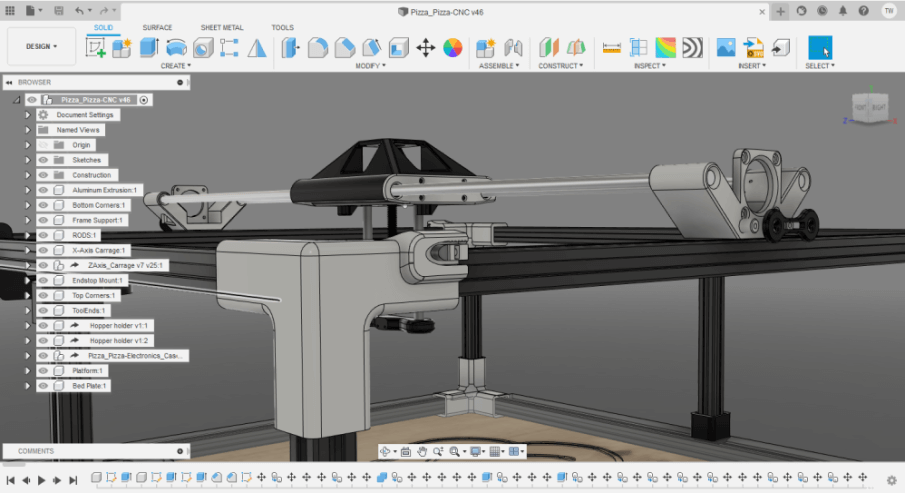
With the X-axis motion done, I moved on to the axis’s one endstop, which will allow our machine to home its X-axis to the switch before usage. The mount for this endstop switch is not overly complicated, attaching a switch holding bracket to the top of the 2020 aluminum extrusion t-slots. The feature uses an M4 bolt and corresponding T-Bolt to attach the bracket to the top of the extrusion through a hole in the bracket. From here the feature stems up to a slot that holds an endstop switch in line with the machine’s X-axis carriage. The switch is held in this slot by its bottom screw hole, using an M2 bolt and nut. I positioned this endstop in the back right of the machine, keeping the endstop away from the cluttered front of the machine, and the switch’s cable distanced as close to the electronic enclosure as possible. The feature can be seen mounted in this position in our final Pizza Pizza CNC render shown below.
Electronic Housing¶
Along with the prior carriage, belt tensioner, and endstop CAD work, I dealt with the brain and blood of our Pizza-Pizza CNC, the electronics system. The system is built around a Mini RAMBo - or RepRap Arduino-Mega-compatible Mother Board - controller board. The Mini RAMBo is a smaller version of the RAMBo controller board, a board based on the Arduino MEGA, including four individual stepper motor drivers and MOSFET switched outputs. This board worked great in the case of our machine, as not only is it a powerful, compact, and easily manipulated controller board, we were able to scrap the board from one of our lab’s old out-of-commission Luzbot Mini 3d printers. This Mini RAMBo controls the machine’s three-axis through four different stepper motors, one wired to the Z-axis, one to the Y-axis, and one stepper port wired to two different X-axis steppers. These steppers work with their corresponding endstops, also wired to the Mini RAMBo, to home and locate the machine. The Mini RAMBo also controlled the machine’s two toolend servos, as well as a full graphic LCD panel to display machine menus and status. The graphical LCD used in the electronics system is a scrapped Creality Ender 3 LCD panel. This whole system is powered by a 12-volt DC power supply, converting 110-volt American AC wall power into the 12-volts needed by the system.
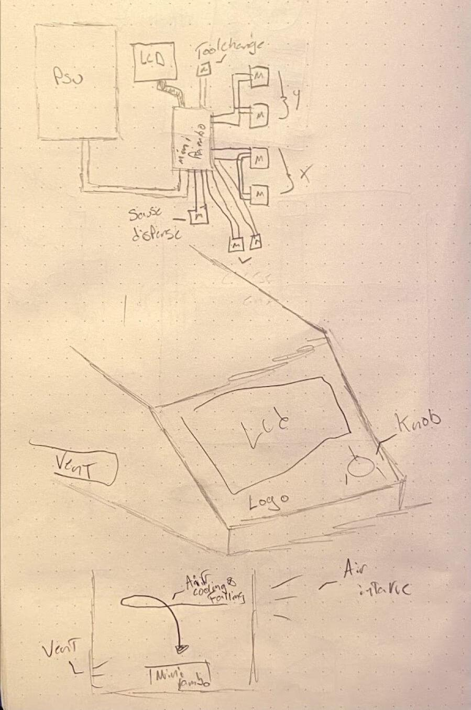
As a complement to the importance of the machine electronics system, I began designing and modeling a separate electronic enclosure that would sit independently to the side of the machine. I started the CAD work for this enclosure in Fusion 360 with not only the goal of fitting all electronics inside, but also maintaining decent-looking cable management, and proper ventilation. It’s worth a second noting that this encloser will not hold the machine’s power supply, as it’s usually not best practice to put the hot PSU next to the controller, so the electronic closer will be connected to the PSU with some hookup wire. I started by tracing the two main boards of the system, the Mini RAMBo, and Creality Ender 3 LCD, in Fusion 360. I then started work on the body of the encloser itself, designing the base around the traced Mini RAMBo, and extruding up this base to make an encloser. From here I used a profile sketch of the LCD panel to draft a slanted face on the enclosure, where the LCD would mount, an angle for easy viewing, and minimal screen glare. The final bit allowing these two mainboards to fit in the enclosure is space for the Mini RAMBo’s USB port to pass through to the back of the enclosure. The USB port access allowed me to continue to update the board’s firmware while the electronics were in the enclosure.
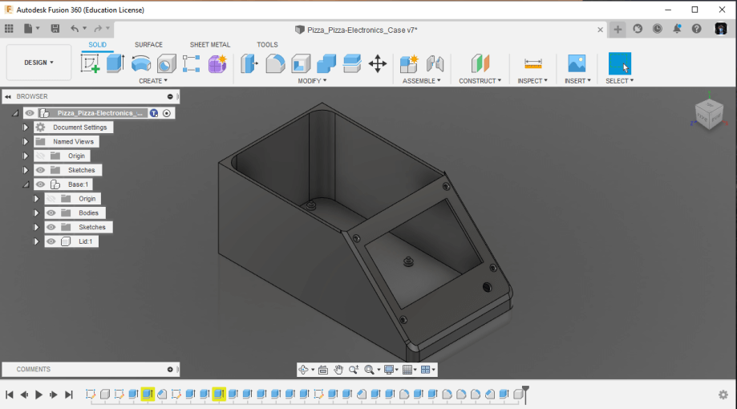
Before continuing with the rest of the enclosure, I began the process of splitting up the pre-existing body into different components, and also creating new bodies and components for the enclosure’s lid, wire grommet, and LCD knob. I spit these components up to make the 3D printing process as pain-free as possible, keeping in mind the limits of 3D printing while doing so. I ended up with four different components making up the encloser, one main body, the LCD screen mounting plate, the LCD screen knob, and a lid to the top of the encloser.
Next up: electronic enclosure ventilation. Luckily enough for me, the Mini RAMBo has two 12-volt fan ports on the board, which can be turned on and off by the firmware. I used one of these ports to connect a small 40x10mm 12-volt fan to the closer, which is turned on by the firmware when the board’s stepper motor drivers are activated, the default encloser fan configuration for marlin. This encloser fan pulls air in through a vent on the top left wall of the encloser’s base. This intaken air circulates the encloser, where the cool air falls over the Mini RAMBo, positioned at the base of the encloser, before leaving through a side air vent positioned to the left of the Mini RAMBo. As a final touch to the electronics enclosure, I added a Pizza Pizza CNC logo to the front LCD plate, and some cool pizza icons on the enclosers sides, complementing the slanting nature of the enclosers front.
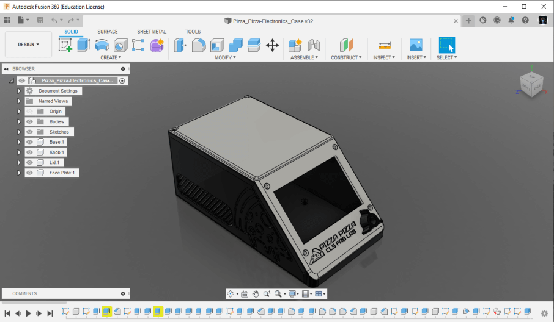
Upon the completion of this electronics box, I derived it into our shared Pizza Pizza CNC render, just like I did with the machine Z-carriage. After this completion, I spent some more time in the group fusion file, modeling in a nice plywood platform on which the machine and electronic enclosure rest.
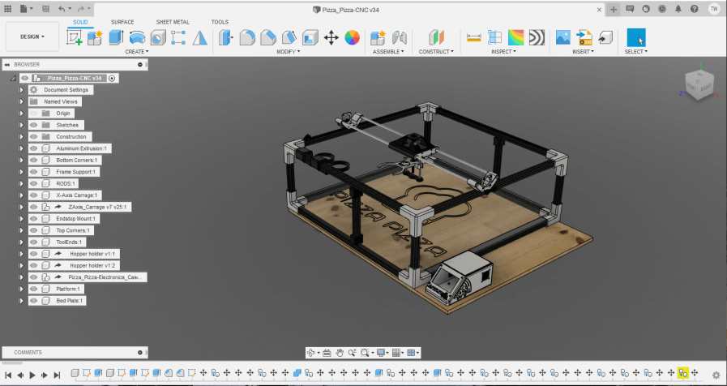
Configuring Marlin¶
The electronics system of our machine is no good without firmware, so naturally, after completing the machine’s electronics design, I began the firmware compiling process. Our Pizza Pizza CNC runs a version of the Marlin 3D printer firmware on the machine’s Mini RAMBo. Marlin is an open-source firmware project with a great community of makers behind it, and thus was an easy choice for our machine due to the great documentation. The variations and branches of Marlin can vary greatly, so I’ve found that when working with the firmware, it’s best to start with a base configured for the controller board that you can alter. I began the firmware powering our machine using firmware provided by MarlinBuilder and the MPCNC project as a reference to make alterations to. The compiling of Marlin is a time-consuming process on your first couple of times through although the code is well documented and the line-by-line comments make it easy to work through, however as you begin to become more finally with the Marlin layout, the code becomes easier to navigate and compile. Below are the Pizza Pizza CNC Marlin completion notes, noting major aspects/configurations of the firmware. It’s worth noting, however, that the amount of small simple changes made in our instance of the firmware would be too many to cover on this page, despite that, the configured instance can be found under this publications Supplies section, and smaller changes than those covered on this page can be found, explain part by part by the codes comments.
This instance of Marlin firmware is an altered version of that supplied from the MarlinBuilder repo.
- Configured for MiniRambo
- Configured for CR10_STOCKDISPLAY
- Custom Boot screen
- Custom Status screen
- Configured with 0 Extruders - for CNC use
- Custom Pizza Maker Menu
- Configured with Marlin Game Menu
- Triple Enabled Servo Control Ports
Custom Boot and Status Screens¶
Upon bootup of Marlin, you are greeted with a graphical boot screen and then a machine status screen on the system’s LCD, a good place to make a first impression. The firmware gives you the ability to include custom boot and status screens in your firmware instance, a feature I took advantage of, setting up our Pizza Pizza CNC firmware to boot with a chef hat logo, and include a “Pizza Pizza - CLS Fab Lab” icon on the LCD’s status screen. The first step in configuring these screens is to enable the firmware to show them. This can be done simply by uncommenting the lines…
in Marlin’s Configuration.h file. These three lines are found towards the very top of the Configuration.h file, just under the firmware author credits. Once uncommented, the lines will become more vibrant when compared to the comment lines, showing their activation.
With the custom screen options enabled, the next step was to generate and include the image files to be shown on these screens. Starting with the custom boot screen, I created a new file in my Marlin directory, under the Marlin folder named _Bootscreen.h. This file is recognized by the Marlin instance as a custom boot screen, and thus the firmware will display the contents of the text file on bootup. With this file created, the next step was to generate the content of the file, a process made simple with Marlin’s Bitmap Converter. This bitmap converter tool from Marlin’s website converts a bitmap image file into text content that can be pasted directly into Marlin’s _Bootscreen.h file. Here I chose a bitmap logo for our machine, a chef hat icon with Pizza Pizza written below it, and imported the bitmap into Marlin’s converter. Under the tool, I selected the Marlin 2.x check box, so the tool would generate a format for the updated version of Marlin, along with the Binary, ASCII Art, and Boot checks. The Binary check box will output the conversion in a binary format that can be inserted into the _Bootscreen.h file, as opposed to the generic .hex file. Next, the ASCII Art check box, adds a nice preview of the screen to the converted code, making the text a little more readable. And Finally, selecting the tools Boot checkbox will format the conversion for the _Bootscreen.h file. With all these checks marked, I used the tool to convert the bitmap and then copied the output into my _Bootscreen.h file under my Marlin directory.
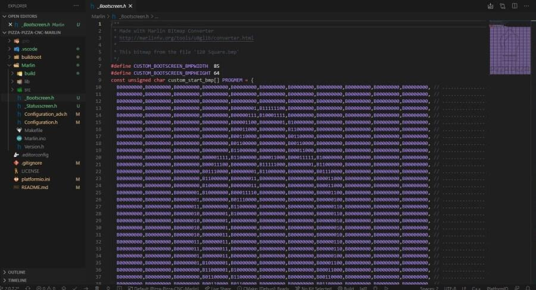
Moving on to the firmware status screen file, the basic file setup for the screen is practically the same as the boot screen. First, I created a new file in my Marlin folder, titled _Statusscreen.h, and then used the same Bitmap Converter to convert a Pizza Pizza - CLS Fab Lab logo and Pizza icon into our systems status screen. This conversion can be done by checking all the same boxes as before, Marlin 2.x, Binary, ASCII Art, except the Boot checkbox, as now because were generating the status screen, I checked the Status box. Despite these correct settings, I would receive an error while generating this status screen, as, unlike the systems boot screen, Marlin’s status screen has more space requirements. I found these two lectures on Customizing Marlin LCD and Marlin’s Custom Status Screen helpful while troubleshooting this, as both videos explain the different requirements of these custom screens and the workings behind them. The Marlin status display screen leaves a 128x19 pixel canvas for a custom status screen, with even less room for any other display graphics included on the status display. Our instance of Marlin has a 105x19 pixel canvas for this custom screen, due to the animated fan icon shown on the status display when the electronics encloser fan is activated. This fan icon comes preset when a fan is set up in Marlin, and I think adds a nice touch to the status display, so I decided to leave it, and work with the 105x19 pixel canvas. Keeping this size in mind, I rescaled the logo bitmap to the correct size and touched up the image pixel by pixel until the entire thing was clean black and white. I then reimported the small bitmap into the converter, checking the boxes listed above, and converted the image before copying the output into the _Statusscreen.h file in my Marlin folder.
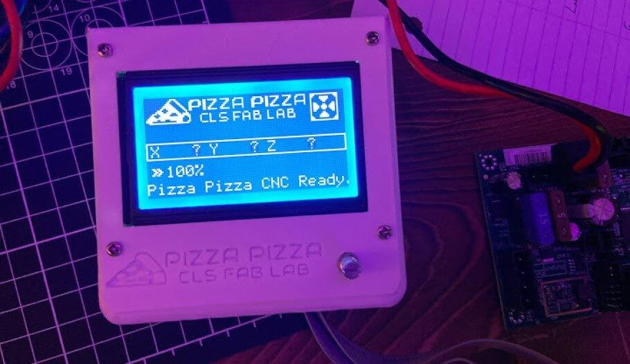 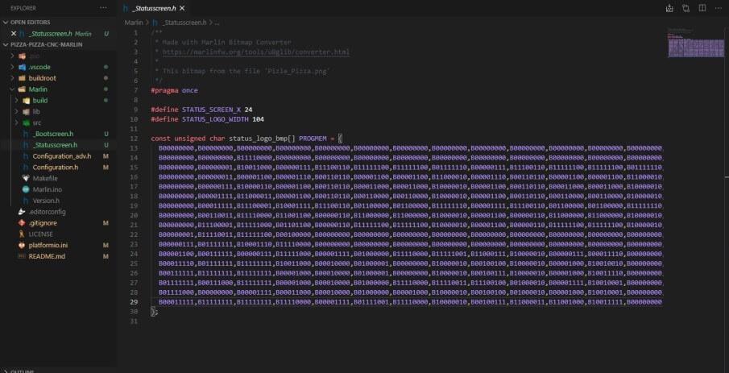
Custom Interface Menu¶
With our instance of Marlin customized with a custom boot and status screen, I next moved on to the interface’s LCD menus. Due to the lack of an SD card reader on both the Mini RAMBo board and the Ender 3 LCD, I opted to enable a customer menu in Marlin where we could store our pizza-making gcode and run it through the LCD interface. Marlin can be configured with custom menus like this through its Configuration_adv.h. I started a new custom menu by uncommenting line 3227,
This feature enables the ability to include a custom menu to run gcode commands in the Marlin interface. I began the menu by naming it and setting some default settings with the lines …
#define CUSTOM_USER_MENU_TITLE "Pizza Maker Menu"
#define USER_SCRIPT_DONE "M117 Pizza done."
#define USER_SCRIPT_AUDIBLE_FEEDBACK
#define USER_SCRIPT_RETURN
These lines in order first name the menu Pizza Maker Menu, tell LCD to print Pizza done. on the status screen after a script is run, enable the LCD to give audible feedback when the menu is used, and also to return the interface to the status screen when a script is run. With these settings set, I next included the two different options under the menu, with the lines …
#define USER_DESC_1 "Load Pizza Pan"
#define USER_GCODE_1 "G28 X Y"
#define USER_DESC_2 "Make A Pizza"
#define USER_GCODE_2 "G28 X Y"
These lines establish the two menu options, to Load Pizza Pan and to Make A Pizza, and the gcode that will be run when selected. The gcode put in place here, “G28 X Y” is just a place filler in the Make A Pizza slot until the actual pizza-making code is written, however, it does serve its purpose in Load Pizza Pan, as the line homes the machine on its X and Y-axis. Below is an image of the entire custom user menu put together in Marlin’s Configuration_adv.h.
Servo Setup¶
Our Pizza Pizza CNC electronic system is not only responsible for axis movement and the LCD interface, but also tooled control, and thus the firmware needs the ability to control servos on the two hopper tool ends. The toolend system of our CNC was made by my friend, Charles DeMey. The Marlin firmware can control servos natively through gcode commands when configured in the firmware, so this was my first step in the servo setup process. The servo control sections can be found at the very bottom of Marlin’s Configuration.h file, and you can enable servo control by uncommenting the line …
The number following this line tells the firmware the number of desired servos, in m=our machines case three, two used by the tool ends, and one for possible expansion. In correspondence with this line, you will next need to set a servo delay, so each servo will have time to reach its desired angle. This delay value needs to contain an array of delay values corresponding to the number of servos set up in the prior line. In our case, this array looked like this …
setting a delay of 300 for each of the three servos individually.
Unfortunately, the Mini RAMBo board were using in our electronics system doesn’t come equipped with on-board factory servo pins, however, this issue can be worked around by reestablishing the board’s pins in marlin, assigning different servo pins. The Mini RAMBo comes equipped with 6 onboard endstop pins, for MIN and MAX dual end stopping, a feature that was not taken advantage of on our Pizza Pizza CNC, so I settled on switching the board’s three MAX endstop pins, into our needed servo pins. I located the Mini RAMBo board file under my Marlin directory and scrolled through the file until I found the board’s Limit Switches section. Here I switched the Mini RAMBo pins 30, 24, and 23, from the factory MAX endstop pins, into three different servo pins, SERVO0_PIN, SERVO1_PIN, and SERVO2_PIN.
Game Menu¶
As a fun little touch to our machine’s instance of Marlin, I enabled Marlin’s easter egg game menu on line 1427 of Configuration_adv.h. This feature adds a menu at the bottom of the Marlin LCD interface, allowing a user to play game options configured in the firmware. On our Pizza Pizza CNC display, a user can play Brickout, Space Invaders, or Snake while waiting for their pizza to be prepared. Not a necessary element of the firmware, but a nice touch to finish this compilation with.
Compiling Marlin¶
Now with our instance of Marlin configured, the next step was to build and flash the code to our Mini RAMBo. I used PlatformIO to build and flash my instance of Marlin to the board. I began the firmware building process, using PlatformIO’s build checkmark in its toolbar while in my Marlin directory. This built successfully on the first try, so I next moved on to connecting the Mini RAMBo to my computer and flashing the firmware. One thing to keep in mind while flashing the firmware to a Mini RAMBo is the need to power the board from an external power supply while connected via USB to a computer. I hooked up the board to a 12-volt input from a power supply and connected the board to my computer via a USB cable. Upon board connection, PlatformIO scans the port and recognizes the board, allowing me to just use the PlatformIO toolbar’s Flash arrow to flash the Mini RAMBo with our instance of Marlin.
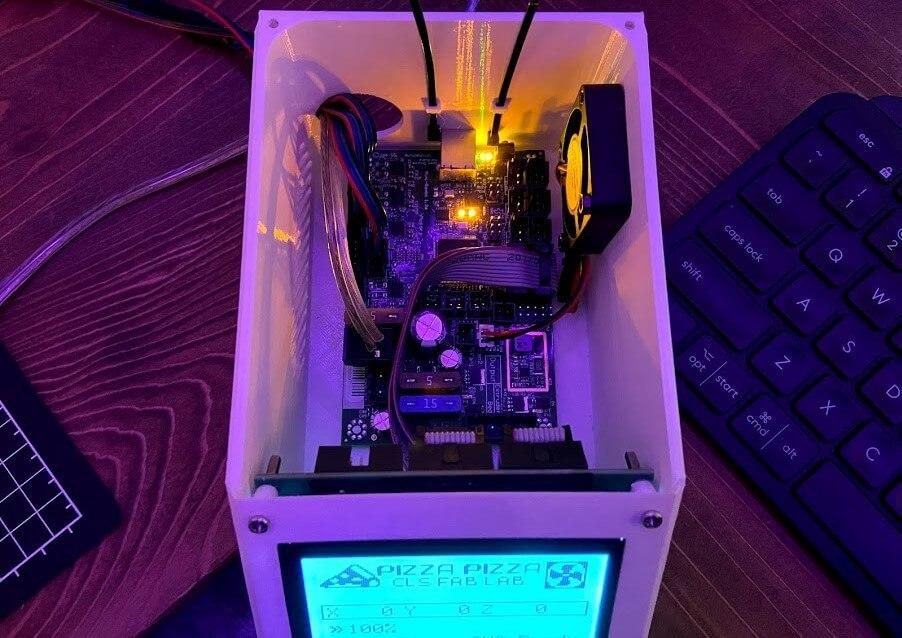
… and success! The Marlin firmware flashed to our Mini RAMBo and electronics system on the first go and booted up.
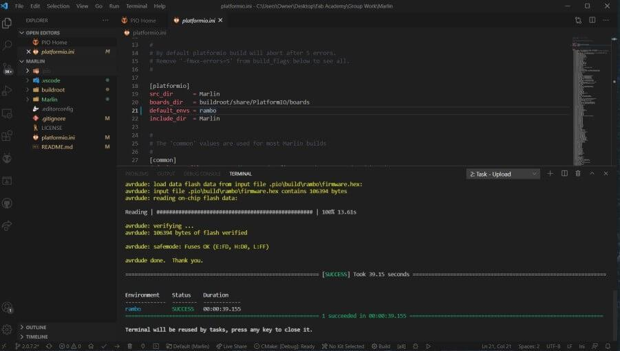
Firmware Testing¶
I began to move on to testing both the electronics system and firmware. Visually, Scrolling through the LCD interface I found no issues, and every part of the system powered on correctly. I nest connected the Mini RAMBo to my laptop vias USB and began to test the system by sending it commands. I used CNCjs, a javascript CNC controller, and gcode sender, to first ensure I could connect to the system via USB, and next to test the board’s three active stepper motor ports by hooking up a stepper to the boards X, Y, and Z stepper ports. This jerry-rigged test, shown in the video below, yielded good results, confirming control over the steppers through firmware.
I also completed this same motion test through the LCD interface Motion menu, to confirm the interfaces working, before moving on to the final firmware test, the game menu test. All three of the included games work great and are super entertaining. Unfortunately, Graham Smith, outperformed me while testing the games, scoring a 155 in space invaders, despite that, the game menu was an entertaining success, and finally, the firmware was complete.
One of the coolest aspects of running Marlin on our CNC is its easy LCD interface integration, a feature that adds more flair to a machine. Although different unique sections of this interface are discussed above under the Marlin configuring section of this page, I threw together a walkthrough of the final product, all the parts together, shown below.
Manufacturing & Assembly¶
The machine manufacturing and assembly process began with lots of print time. Due to our mostly 3D-printed gantry design, Graham Smith and I ran our printers around the clock for a couple of days to crank out all of our CNC’s printed parts.
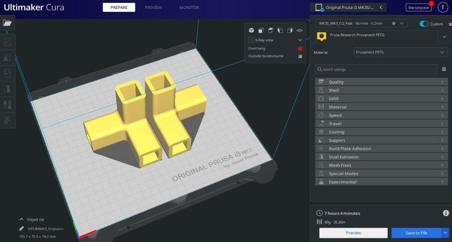
Electronics & Housing Assembly¶
Before worrying about any wiring, I first began with print cleanup for our electronics enclosure. I printed the large base to our encounter with supports to allow for the side pizza icons to come out cleanly, and thus after the print, I had to post-process the part. All parts printed for any of my systems use PETG plastic, and in my belief that allows this post-processing to be a little easier. I followed the same steps taken to clean up my prints in my Fab Academy 3D printing week assignment, and these processes can be read about on that page.
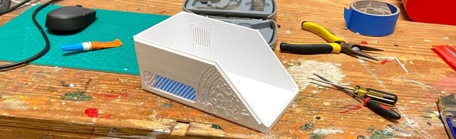
After this cleanup, I began to install the electronics inside the case, first screwing the LCD panel to its mounting place, using the plate’s spacers, to align the screen in its opening, shown below.
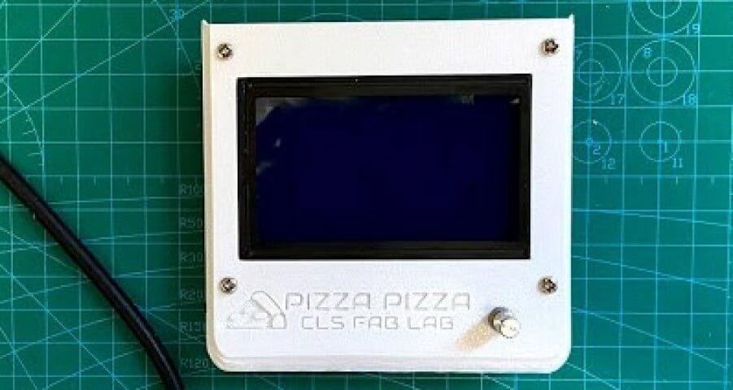
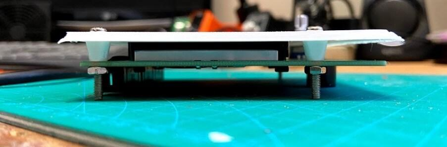
I then moved on to welding this front plate with the LCD attached to the encloser’s base, sticking the two together with superglue, before using a hairdryer and some sandpaper to clean up the edge. Nextly, I installed the Mini RAMBo on its mounting pins, aligning the board’s USB port with its corresponding cutout, and also screwed in the enclosure fan with some M3 screws and bolts.
I moved on to setting up the machine wiring harnesses and altering some stepper cables for each axis. The Machines X-axis steppers are set to run off of the same port on the Mini RAMBo, so I first prepared this cable, by splicing two stepper connectors to one of the board connectors, and next reversing two of the stepper connector wires, one of the stepper cables, to ensure the two motors would be reversed, and thus move in the same direction when mounted in a mirrored position. One of these X-axis stepper cables also needed to be longer than the other, due to the mounting position of the stepper in correspondence to the electronics housing, so I added a bit of length to one of the connectors. I also repeated this added length of the Z-axis stepper, and plugged these two wires, along with the unaltered Y-axis wire into the Mini RAMBo.
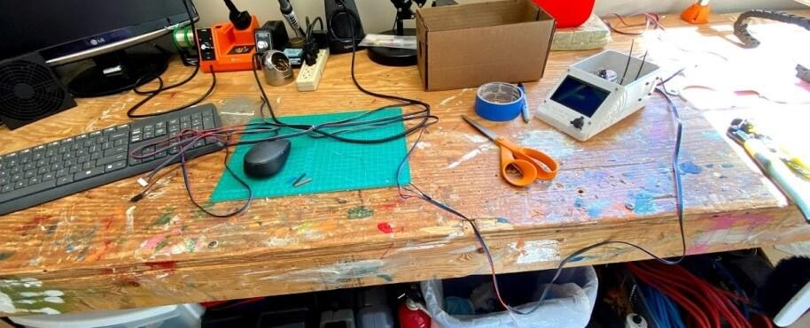
The next wiring step was the power of the system, which simply meant connecting the Mini RAMBo to a 12v DC power supply, and that to an AC adapter and fuse box (Yes the fuse here helps, I blew one in this box while testing due to me being stupid, so the inclusion of this part saved the system). I hooked up our Mini RAMBo’s power adapter to some speaker wire, and ran it to the VCC and GND outputs of our power supply, hooking up each wire to the correct output. Nextly, I attached the Ac adapter and fuse to the system, by hooking up the live, neutral, and ground wires to our power supply, before plugging in the system to test. This power wiring setup worked, and the whole system booted up, as shown in the picture below.
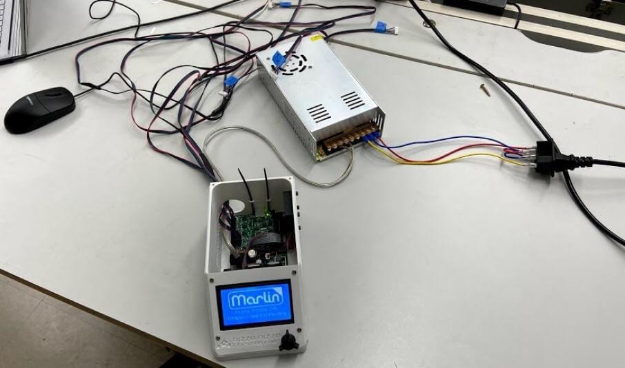
The final pieces to this wiring puzzle involved connecting the three axis’s endstops to their correct MIN endstop pins on the Mini RAMBo, and also attaching some servo extender cables to the designated servo data pins, set up above in the firmware, before routing all of these cables through the enclosers back wall zip ties, mounting the cables cleanly out of the way.
Gantry Assembly¶
The majority of the Gantry assembly process was print cleanup, due to the gantries a large amount of 3d printed parts, and like before I followed the same post-processing steps as I did in my Fab Academy 3D printing week assignment, but after all, this was complete. Below, I’ll quickly touch on the assembly of each of the printed components I worked on…
starting with the belt tensioners. There were eight corners on our machine in total, but only four needed assembly/post-processing. These were the four top corners including the machine’s X-axis belt tensioners. These tensioners are assembled by sliding an M3 nut into the tensioners slot, securing it in with an M3 bolt, which runs through the nut and connects to a pressure distribution end, where the belt wraps around. On any piece connecting a belt to a 3d printed component, I included meshing teeth, to align and hold the belt in place snuggly without adhesives.
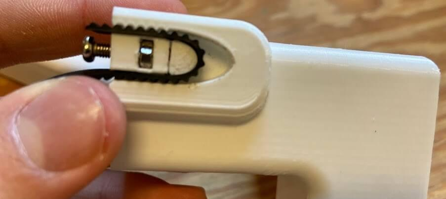
I then used these eight printed corners, along with some 20x20 aluminum extrusion to assemble the machine’s frame. I first used a metal bandsaw to cut these extrusions to their desired lengths …
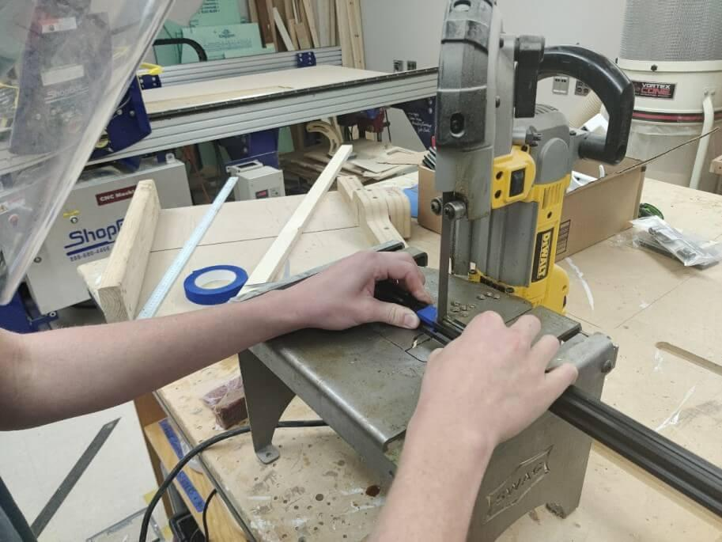
before attaching the corners to the extrusion with some work with a mallet. Unfortunately, One of the cornets cacked on the top during this assembly, but this was no big deal because I just used some superglue and a clamp to close the crack, ensuring the corner was still square.
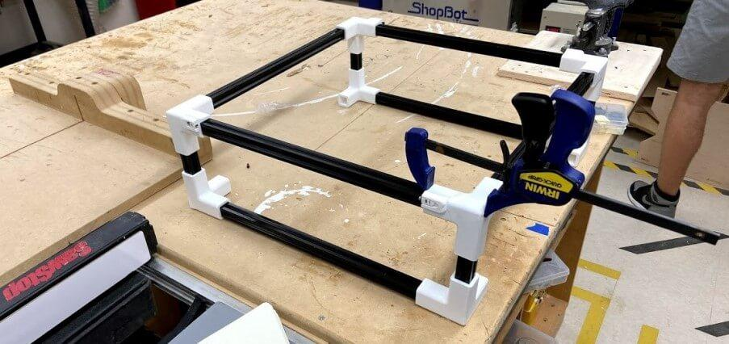
The Z-carriage claw assembly was pretty simple, the only step was to attach the brass threaded rod coupler to the claw. This was inserted just as you would any other brass insert, by heating the coupler with a soldering iron, aligning it to the claw’s hold, and applying pressure to push the insert into the claw. From here, I used two M3 bolts and nuts to secure the brass coupler in the claw, ensuring no rotation in its resting place.
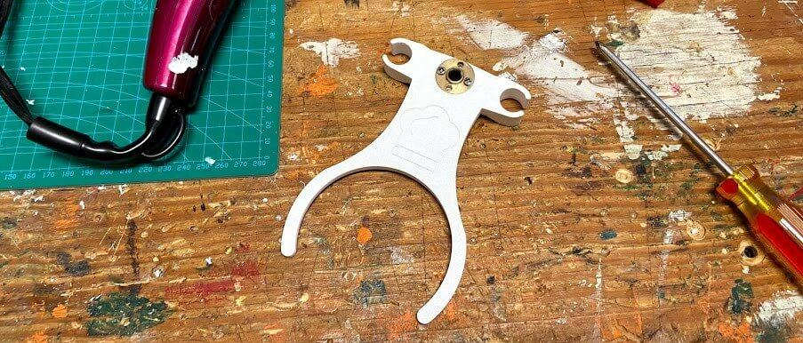
To complete the rest of the Z-carriage, I first, like all the other prints before it, removed supports from the print and post-processed the part.
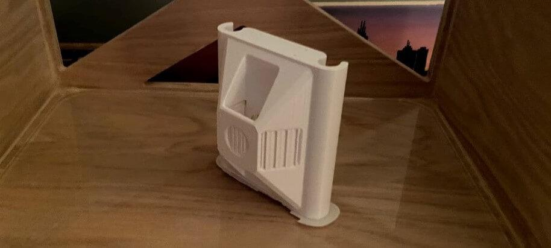
The first step in this carriage assembly was the installation of the embedded couple support bearing. This bearing allows the Z-axis couple to have a place to sit, reducing strain on the coupler, and allowing for smoother movement. I greased a small skateboard bearing, and fit it into place, using a dowel to reach the bearing when at the bottom of its hole.
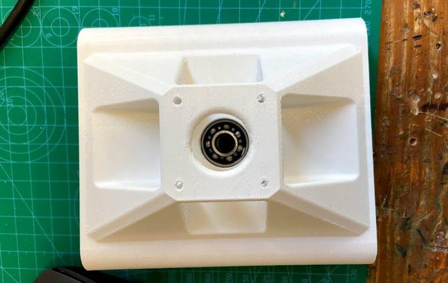
Nextly, I mounted the carriage’s four linear bearings in their slots, and then attached the carriage’s two endplates with eight total M3 screws, securing these bearings in place.
The Z-carriage assembly now just came down to mounting the stepper, claw, and Z-axis rods, which needed to be cut down to size on the metal bandsaw, just like the aluminum extrusion. I first mounted the Z-axis stepper, coupler, and threaded rod in place, ensuring the couple was sitting flush on the embedded bearing, before attaching the stepper to the carriage with some M3 screws. Nextly, I prepared the bottom half of the axis, using a mallet to hit the two steel rods into the bottom of the axis, mounting the axis claw to these rods, and screwing on the Z-axis endstop to its mount, before hitting this whole assembly onto the bottom of the Z-carriage, leaving me with the completed product shown below.
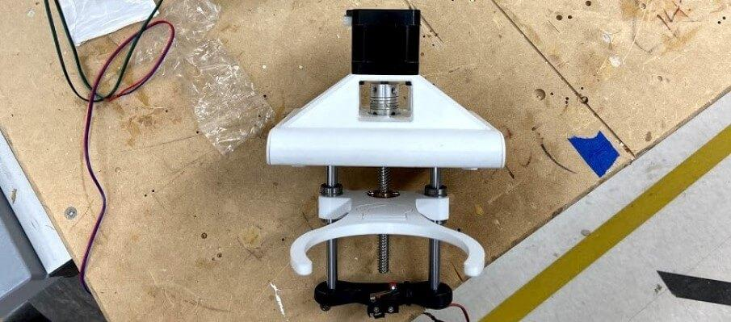
I then mounted the Z-carriage to the two Y-axis steel rods, and handed off the gantry assembly to Graham Smith, who attached my Z-carriage to his X-Axis carriages, and worked with me to mount the whole gantry to the frame of the machine.

Pizza Making!¶
To prepare a pizza in our Pizza Pizza CNC, a .gcode script will need to be run on the machine, just like a 3d printer or other CNC machines. I broke up the task of this .gcode into different steps…
- Home the Machine
- Pick up the Sauce Tool End
- Move to the center of the work plane, and open the hopper via the servo
- Move the machine to make a circle of sauce from this center point
- Close the hopper via the servo
- Drop off the Sause Tool End
- Pick up Cheese Tool End
- Repeat Steps 3-5
- Drop off the Cheese Tool
- Jog Machine Back to Origin
These 10 different steps were split up into sections that could be generated, and others that would have to be written line by line.
I began the pizza gcode work in Fusion 360, as I planned on generating a circle toolpath we could run to lay down sauce and cheese on our pizza. Our desired pizza size was a 12” diameter crust, so I began by putting a circle representing this crust on a workplane sized like our machine’s bed. Then I created an offset circle running on the inside of this crust, representing the layer of sauce and cheese, leaving a crust around the outside. With this basic circle done, I saved the sketch as an SVG to my computer.
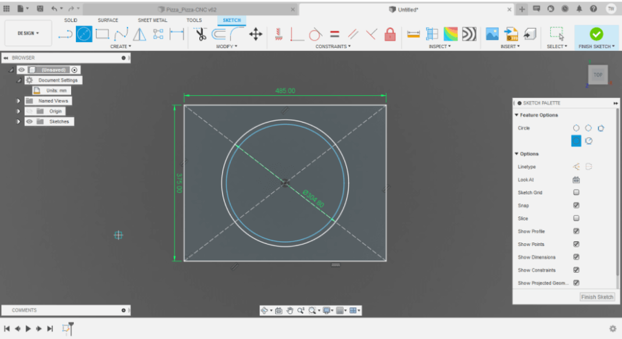
With this SVG created, I next moved on to the actual toolpath generation for these circles. For this process, I used a nice simple toolpath generation software called Estlcam, a software I’ve used in the past whenever doing pen plotting with my CNC.
I began in the Estlcam software by importing my circle SVG created in Fusion, before using the software to generate a pocket-like toolpath on the inside circle, peeling out in spirals from the center of the circle. To do this I first created a custom hopper “bit profile” in Estlcam (just a 25mm end with fast speeds and feeds), and selected this tool along with Estlcam’s Hole tool from the toolbar.
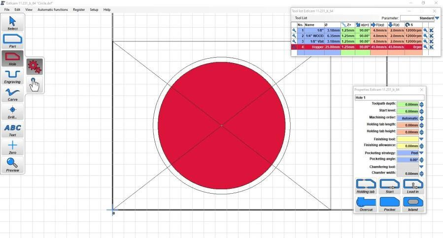
I then exported this pocket-like circle toolpath from Estlcam via …
and then view the generated .gcode in Esltcam’s GCODE preview window.
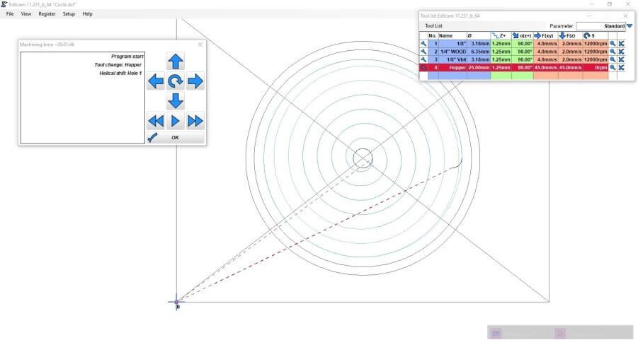
This process left me with generated gcode of a single circle, that I could later manipulate into our pizza-preparing gcode. I ran a quick test of this generated gcode on my personal CNC, just to confirm it’s working, shown in the video below.
Tool Change & Servo Control¶
The next step in our pizza preparing gcode was flattening out servo control, and proper tool change code. I worked with Charles DeMey on this process, starting with controlling the two servos on Charles’s tool ends for our CNC. This servo control feature is a feature I had set up prior in the Marlin firmware (talked about above), and Charles and I worked off of my compiled firmware to attach a data line from each servo to their set pins on the Mini RAMBo. Originally, I was planning on not only running this data line to the servos from the Mini RAMBo but also VCC and GND to power them from the board. However, this setup drew too much current to the servos and left the system’s LCD unable to display characters. As a workaround to this, I ended up powering each of these servos through a Buck converter attached to our machine’s power supply, stepping the 12v signal down to 5v for the servos. From here, Charles spend a little time writing and testing 5 different angles for each servo
- Closed
- Half Open
- Open
- Opposite Half Open = Opposite Closed
and converted these 5 angles, into gcode servo control commands, inserting the servo angle into …
The M280 command initiates Marlins servo control, where we can then declare the servos port with the P, and set the desired angle with S. We used this format for each servo 5 angles and copied this servo control gcode into our generated circle code to use later.
After the servo control gcode was flattened out, Charles began the work of writing tool change gcode for our CNC, writing out the rough positioning of each hopper when on its holder, jogging the machine to line up with the holder, and picking up the hopper. He wrote the tool change instructions for each hopper’s pickup and return based on these positions, before having to leave for the night. Unfortunately, the next day Charles was unable to make it back to the lab due to COVID protocol, so I took over testing his work, with a little help from Graham Smith. With Charles’s tool changing code as a starting place, we began altering each position value little by little until we had a completely successful automated tool change, shown in the video below.
Compilation of GCODE Parts¶
The final step in our machine gcode was to compile all of these individual sections together. I began in an updated smaller version of the circle file (so we could clear the machine hoppers, we couldn’t use as big of a circle), where I began by copying in the servo closed command at the start of the code, ensuring no sauce and cheese leaks before called on. Next, I included the line…
which homes the machine on all 3 axes, to their corresponding endstops. From here I copied in the tool change gcode to pick up the sauce hopper, before copying in the generated smaller circle gcode. Inside this generated circle, I copied in the servo half-open line at the point when the machine reaches the center of the crust and is beginning to spiral out and also included the servo close line when the last spiral point was hit. The final piece to this first sauce code was the hopper return code, which I copied in at the very end of the generated gcode, and then included another…
to rehome the machine. I copied the entirety of this sauce code below the last line as a starting place for the cheese gcode. I replaced all sauce hopper tool changes and servo control lines, with their corresponding cheese hopper lines, and finally, the machine gcode was complete!
Of course, after all this work on a pizza-preparing machine, the only logical test for the machine would be preparing a pizza. We set up our CNC by covering the entire work area and all parts that could be covered with a plastic trash bag, as I didn’t want to get sauce on our newly working machine. From here, we loaded the two hoppers with tomato sauce and some shredded cheese, confirmed everything looked right, and then ran the final pizza preparing gcode, and…
… it worked!! The pizza preparing gcode worked through both of its tool changes, creating spirals of sauce and cheese on our pizza crust. Unfortunately, there were a couple of small issues in the run-through, one being not enough sauce put in our sauce hopper, so upon its tool docking, the hopper wasn’t heavy enough to stay in the holder, and the other being a sticky cheese. We had left our cheese and sauce out in our lab for almost two days before the test, and not only did this cause the cheese to smell, but also left us with a cheese that would not stop sticking to itself, proving an issue when trying to get the cheese to fall from the hopper, however, the cheese fell through the hopper hole with a little convincing, and finally we had prepared a pizza.